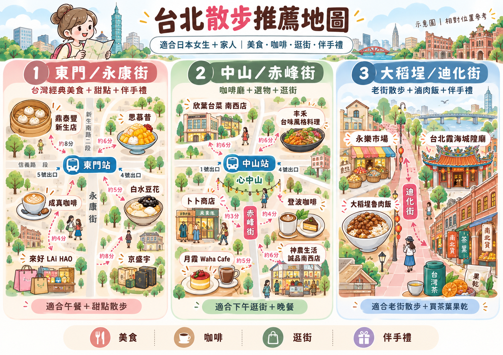

鼎泰豐 新生店
東門ランチのおすすめ。小籠包をシェア。長い行列なら近くの麺料理へ。東門午餐推薦小籠包，排隊太久就改附近麵食。
地図をひらく／開啟地圖 ↗ · 店舗・メニュー／店家資訊 ↗好吃、可愛，與家人一起漫步台北。
さくらちゃんとご家族へ。
お茶を飲んで、路地を歩いて、ときどきひと休み。
台湾での時間が、すてきな思い出になりますように。給さくら與家人：喝杯茶、走進巷弄，偶爾停下來休息。願在台灣的時光，成為美好的回憶。
台北 ＋ 九份 · 3 / 4 / 5 DAYS
 ゆっくり、よりみち。
ゆっくり、よりみち。A LITTLE TREAT TO TAKE HOME
街歩きの途中に、義美（I-MEI）へ。持ち帰りやすい常温のお菓子を選んで、家族や友人へのおみやげに。散步途中順路逛義美，挑選方便攜帶的常溫零食，帶回去與親友分享。
地図は店舗検索です。近い店舗の住所・営業時間を確認してから出発を。冷蔵品より常温品が旅向き。原材料・アレルギー表示・賞味期限も見てね。以上為 Google 地圖門市搜尋，請先挑選附近分店並確認地址與營業時間。旅行採買以常溫食品較方便，也記得看成分、過敏原與賞味期限。
義美公式 店舗一覧／官方門市查詢 ↗DECEMBER 2026
マンゴー氷も温かい台湾スイーツも、その日の気分で。いちごの限定品はお店の発表を見てから。想吃芒果冰或熱甜湯都隨當天心情，草莓限定品項則等店家公告再決定。
01 — YOUR LITTLE JOURNEY
滞在日数に合わせて、ちょうどいい台北を。依照停留天數，找到剛剛好的台北行程。
到着日・帰国日を含むモデルプランです。初日は午後到着、最終日は夕方便以降を想定。便の時間に合わせて短くしてください。行程包含抵達與返國日，暫以首日下午抵達、末日傍晚後離境規劃，請依航班縮短調整。
全部まわらなくても大丈夫。気になるところだけ、どうぞ。
02 — A TASTE OF TAIWAN
みんなでシェアして、いろいろ少しずつ。與家人分享，每一樣都嚐一點。
東門ランチのおすすめ。小籠包をシェア。長い行列なら近くの麺料理へ。東門午餐推薦小籠包，排隊太久就改附近麵食。
地図をひらく／開啟地圖 ↗ · 店舗・メニュー／店家資訊 ↗マンゴー氷のおすすめ。掲載メニューでは季節外は冷凍マンゴーを使用。12月の販売と価格は当日確認を。寒い日は温かいお茶に。推薦芒果冰；店家刊登菜單註明非產季使用冷凍芒果。12 月供應與價格仍以現場為準，怕冷可改熱茶。
地図をひらく／開啟地圖 ↗ · 店舗・メニュー／店家資訊 ↗麗水街7巷11號。季節のおやつを楽しむ一軒。2026年12月のいちご商品は未確認。なければ金銅燒など当日のメニューから。麗水街7巷11號，適合挑一份季節甜點。2026 年 12 月草莓品項尚未確認，備案選當日供應的金銅燒等點心。
地図をひらく／開啟地圖 ↗ · 店舗・メニュー／店家資訊 ↗長安西路220巷17號。魯肉飯と卵のランチ。満席なら近くの麺・ご飯料理へ変更して、午後は茶館で休憩。長安西路220巷17號，午餐可選滷肉飯配蛋。客滿就換附近麵飯料理，下午再到茶館休息。
地図をひらく／開啟地圖 ↗ · 店舗・メニュー／店家資訊 ↗中山・赤峰街のおみやげ候補。牛軋餅や蛋捲を見て、カフェでひと休み。品ぞろえは店舗で確認。中山赤峰街可看牛軋餅、蛋捲伴手禮，再找咖啡館休息，品項以門市為準。
地図をひらく／開啟地圖 ↗ · 店舗・メニュー／店家資訊 ↗永康街6巷11號。台湾らしい雑貨を選ぶなら。時間が少ない日はおやつか買いもの、どちらか一つに。永康街6巷11號，可挑台灣風格小物。時間不多時，甜點與購物擇一即可。
地図をひらく／開啟地圖 ↗ · 店舗・メニュー／店家資訊 ↗おすすめ＋代案。温かい燒仙草・花生湯・芝麻湯圓も見つけたらぜひ。台湾料理の大皿は家族でシェアする選択肢です。推薦搭配備案：怕冷可找燒仙草、花生湯、芝麻湯圓。家庭式台菜分享菜是選配，不必額外排一餐。店家營業、菜單與價格請於出發前再確認。
A LITTLE WALKING INSPIRATION
東門・中山・大稻埕を眺めて、好きなエリアを選んでね。看看東門、中山與大稻埕，挑喜歡的街區就好。

タップして拡大。提供イラストは散歩の参考用です。縮尺・店の位置・徒歩分数・出口・営業情報は未検証。移動には各スポットの地図リンクを使ってください。點圖放大。此為提供的散步靈感圖，圖中的比例、位置、步行時間、出口與營業資訊未逐項查證，實際移動請使用各景點的地圖連結。圖中文字為中文。
03 — GOOD TO KNOW
ちょっと知っていると、もっと気楽に。多知道一點，玩起來更輕鬆。
宿泊は中山駅・東門駅の近くを候補に。駅までの距離とエレベーター、空港への移動を確認して選びましょう。住宿可考慮中山站或東門站附近，再依步行距離、電梯與機場交通挑選。
坂道と階段があります。雨の日は滑りやすいので、疲れたら茶樓で休憩。階段が難しい場合は市内プランに変更を。
市内はMRTを中心に。九份は往復の移動時間も確保し、帰りの交通を先に確認。荷物はホテルに預けると身軽です。
パクチー抜き：不要香菜
辛くしないで：不要辣
砂糖なし：無糖
アレルギーは別途、食材名を伝えて確認を。
小さなお店用に台湾ドルの現金を少し。雨が強い日は屋内の買いものやカフェへ。営業日・予約・天気は出発前に確認しましょう。
A COMFORTABLE BASE
今回の街歩きなら、中山エリアを第一候補に。駅に近いことに加え、家族の人数・ベッド数・エレベーターの動線を見て選びましょう。以這次行程，我會優先考慮中山區。除了近捷運，也一起看入住人數、床型與電梯動線。
中山駅から公式案内で徒歩約3分。中山・南西の買いものや食事を中心に、落ち着いて泊まりたい家族へのおすすめ。官方標示距中山站步行約 3 分鐘。適合以中山、南西吃逛為主，想住得舒適的家人旅行。
中山駅3番出口から公式案内で徒歩約5分。宿泊にも予算をかけ、ホテルで過ごす時間も楽しみたい場合に。大きな荷物は駅のエレベーター経路を確認。官方標示距中山站 3 號出口步行約 5 分鐘。適合願意提高住宿預算、也重視飯店休息時光的旅客；大行李請另確認電梯出口。
台北駅M3出口のそば。鉄道・MRT移動を優先する家族向け。空港MRTのA1駅からは連絡通路を歩くため、空港線の改札すぐではありません。位於台北車站 M3 出口旁，適合優先考慮鐵路與捷運交通的家人。機捷 A1 到飯店仍須步行，並非機捷閘門出來就到。
12月の料金・空室は宿泊日と人数で変わります。ツイン、追加ベッド、朝食、キャンセル条件を公式予約画面で比較してね。ここでは予約や空室確認はしていません。12 月房價與空房依日期、人數而變動，請比較雙床、加床、早餐與取消條件；這裡是住宿建議，尚未代訂或確認空房。
FROM OSAKA TO TAIPEI
大阪発なら、まず関西 KIX → 桃園 TPE の直行便を検討するのがおすすめ。台北という表示だけで選ばず、空港コードと乗り継ぎの有無を確認してね。大阪出發，我建議先看關西 KIX → 桃園 TPE 直飛。不要只看「台北」，也要確認機場代碼及是否轉機。
直行便があり、家族旅行で移動をシンプルにしたい場合に。桃園空港は台北市外ですが、空港MRTで台北駅へ移動できます。有直飛選擇，適合想減少轉乘的家庭旅行。桃園機場位於台北市外，可搭機捷到台北車站。
運賃だけでなく、受託手荷物・座席・到着時刻まで含めて比較。大阪側は関西空港 KIX で、伊丹 ITM と間違えないように。比較票價時也看托運行李、座位與抵達時間。大阪端是關西 KIX，別和伊丹 ITM 搞混。
航空会社の桃園路線／航空公司航線 ↗大阪から松山への定期直行便を前提にしないでください。通常は羽田などで乗り継ぐ旅程を比較することになります。松山の日本路線には羽田便があります。不要以大阪有定期直飛松山為前提；通常需比較經羽田等地轉機的行程，松山的日本航線有羽田線。
松山は台北市内。到着後はMRT文湖線「松山機場」駅やタクシーを利用できますが、乗り継ぎ込みの総所要時間は別。空港が近いだけで旅全体が短くなるとは限りません。松山在台北市內，落地後可搭文湖線「松山機場站」或計程車；但要把轉機算進總時間，不一定比直飛桃園省時。
羽田・松山の運航情報／航線資訊 ↗比較の目安：桃園は直行便＋市内まで移動、松山は市内に近い代わりに大阪からの乗り継ぎを確認。日付未定のため、12月の便・運賃・接続は予約時に再確認してください。台北松山 TSA は日本の松山 MYJ とは別の空港です。簡單比較：桃園是直飛後再進市區；松山較近市區，但從大阪要看轉機安排。尚無確切日期，12 月班次、票價與銜接請訂票時再查；台北松山 TSA 也不是日本松山 MYJ。
第1ターミナルはA12、第2ターミナルはA13。到着したターミナルの駅から乗れます。第一航廈是 A12，第二航廈是 A13，直接從抵達的航廈搭車。
券売機で単程票を購入、または残高のある悠遊カードなどを利用。大人片道は現在NT$160。空港MRTと台北MRTは別運賃です。售票機買單程票，或使用餘額足夠的悠遊卡等電子票證。現行成人單程 NT$160；機捷與台北捷運分開計費。
紫の表示が目印。台北駅まで第1ターミナルから約35分、第2から約39分が目安。青の普通車も行けますが停車駅が多め。行先表示を必ず確認。認紫色直達車標示，第一航廈約 35 分鐘、第二約 39 分鐘到台北站。藍色普通車也能到，但停站較多；務必確認方向。
中山へは連絡通路で台北MRTの赤線へ移動し、淡水・北投方面で1駅。東門・台北101へは赤線の象山方面。A1と市内MRTのホームは離れています。去中山：沿連通道走到北捷紅線，搭淡水／北投方向一站。東門、台北101搭象山方向。機捷 A1 與北捷月台不同處，要預留步行時間。
荷物が多い・疲れているときはA1からホテルまでタクシーも選択肢。上の35〜39分は乗車時間だけで、入国・待ち時間・徒歩は含みません。行李多或累了，可以從 A1 改搭計程車到飯店。35～39 分鐘僅是列車時間，不含入境、候車與步行。
空港MRTは24時間運行ではありません。深夜着は最終列車に間に合うか確認し、難しければ空港タクシーや予約送迎へ。帰国日は航空会社の案内に合わせ、余裕をもって出発を。機捷不是 24 小時營運；深夜抵達先確認是否趕得上末班車，否則改機場計程車或預約接送。返國依航空公司報到要求，提早出發。
店舗・宿泊・空港交通の確認：2026年10月31日。門市、住宿與機場交通資訊查核：2026 年 10 月 31 日。
予定どおりじゃなくても、それもすてきな旅。
台湾を、みんなのペースで楽しんでね。不必每一步都照計畫，照著大家的步調享受台灣就好。
これは提案用の旅のしおりです。宿泊地・旅行日・便は未定のため、時間と予算は目安で、予約や営業を保証するものではありません。九份は台北市外（新北市）です。情報確認：2026年10月28日。